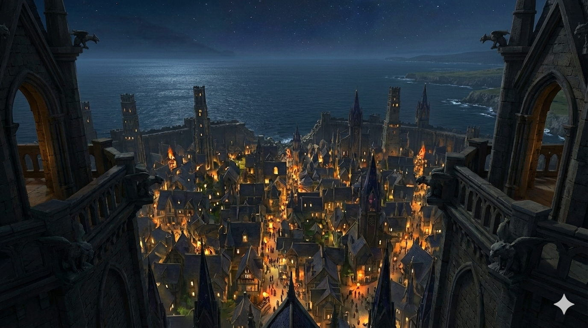
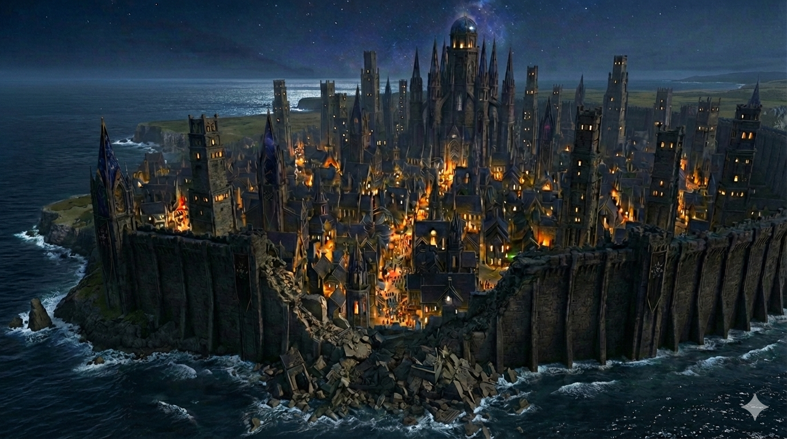
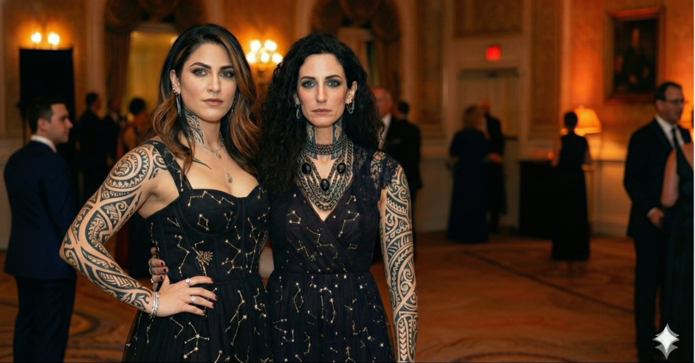
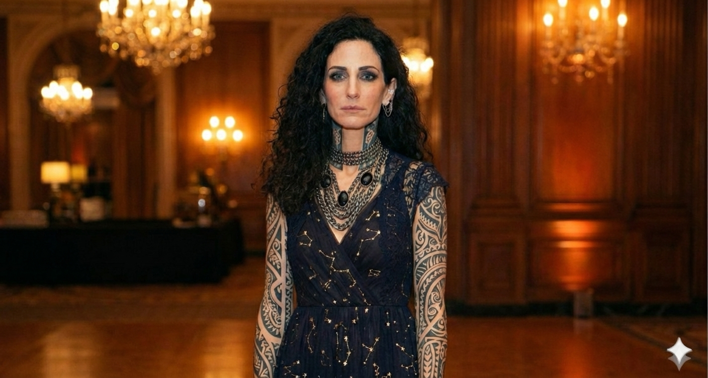
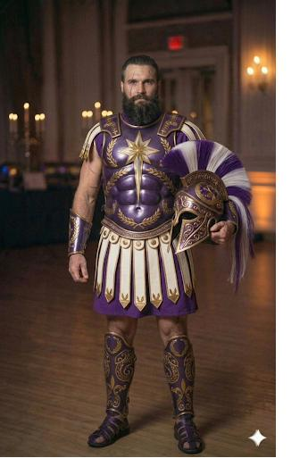

House Stellgaze was Lornavek before Gemlyria was Gemlyria. The line predates the modern kingdom, predates the council, predates most of what calls itself ancient. The Stellgaze women have been reading the stars and writing what they see for longer than any other family on the continent has existed.
The marriage to House Locsird is comparatively recent. Rhyzen Locsird is the King's brother — younger by five years, older by no other measure — and when he wed Maraveth Stellgaze, the older line absorbed the younger. Stellgaze is dominant in the alternation. Children of the union take the Stellgaze name first and the Locsird name second, by birth order. Calistra Stellgaze. Dravik Locsird. Soryn Stellgaze. The pattern is exact.
Rhyzen holds the council seat that represents the family Locsird line — a seat distinct from his brother's crown. The two seats often vote together. They have sometimes voted apart. The house has never made a secret of when they disagree. It is one of the things Rhyzen is known for.
What Maraveth is known for is harder to name in plain language. She sees forward. She does not always say what she sees. The rest of the council has learned what to do when she opens her mouth and what to do when she does not.


House Locsird-Stellgaze keeps one register and keeps it everywhere. There is no ceremonial-versus-tactical split. There is no soft house color and a different battle palette. Stellgaze women wear the cosmos at state functions and they wear the cosmos at war. The midnight base, the cosmic gold, the silver-white starlight — these are the colors of the house in every context. The armor depicts actual galaxies. The gowns trace actual constellations. It is the same statement, made twice.
The tattoos are part of the house. Every adult Stellgaze carries constellation work on their arms, often extending to the chest, neck, and hands. The patterns are personal — each woman's tattoos map to her own birth chart, the night she was born, the stars that were overhead at the moment she opened her eyes — but the tradition is universal within the line. Calistra carries Maraveth's lineage in her ink. Soryn will carry it in hers. Dravik carries a partial register on his neck and hands, modified for a Locsird-named son raised in Astravar.
The doctrine is older than the modern kingdom. It is older than the council seat. It is older than the curtain wall. Stellgaze warriors do not hide on the battlefield. They walk into war wearing the night sky and let the enemy understand what that means.

Astravar sits at the mouth of the West River, on the western coast facing the sea between Gemlyria and West Island. It is a city of dark stone — gothic spires, pointed arches, gargoyles watching the harbor — built across a coastal headland and sealed behind a curtain wall that runs all the way to the water. From the high towers the entire city falls away in lit windows toward the breakwaters and the open sea.
One section of the wall has stood broken for over a century. Sonya-Lee Toraiyo, then a War Maker from West Island, briefly unleashed her full Apex potential during a civil conflict in the city — and a section of the great western curtain wall ceased to exist. The breach has never been repaired. Not because no one could rebuild it. Because no one will. It stands as scar and warning and memorial all at once. Among Astravar's people the breach is a dividing symbol — proof some survived the worst, reminder others have never atoned for it.
Before it was Astravar, the city was Lornavek. The Stellgaze line carries that older name privately. Nothing in the city's signage acknowledges it, but the family does, and so do the oldest people in the high towers who remember what the place was called when the modern map had not yet been drawn.

